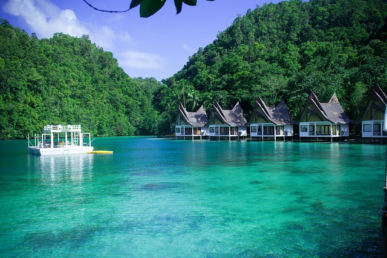

Place to visit in the Philippines
Go back

Siargao is a tear-drop shaped island in the Philippine Sea situated 196 kilometers southeast of Tacloban.
It has a land area of approximately 437 square kilometres (169 sq mi). The east coast is relatively
straight with one deep inlet, Port Pilar. The coastline is marked by a succession of reefs, small points
and white, sandy beaches. The neighboring islands and islets have similar landforms. Siargao is
known as the surfing capital of the Philippines, and was voted the Best Island in Asia in the
2021 Conde Nast Travelers Readers awards.